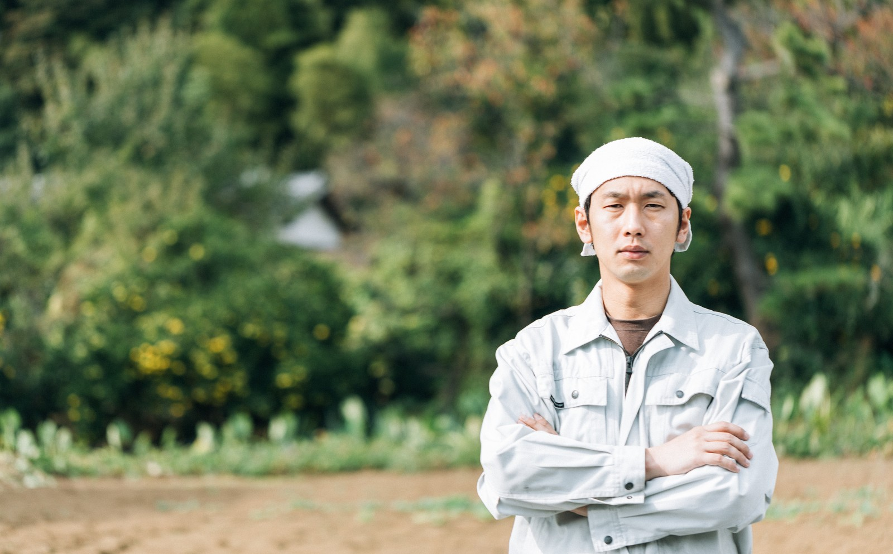

四季折々の新潟からの贈り物
「毎日食べるものだからこだわりたい」
長岡農園を作った先代がいつも口にしていた言葉。
子供に安心して食べさせることのできる野菜は作れないだろうか、
そんな気持ちからこの農園は始まりました。
新潟県の真ん中、長岡市ののどかな田舎にあります。
はっきりとした新潟の四季を活かし大地の恵を野菜に取り入れて育てる、
農薬は使わない、手間がかかっても、たくさんは作れないけど、納得できるものしか届けない。
それが私たちの信念です。

園主 長岡 太郎
幼少期から父の背中をみて育ち、農園で過ごす時間が楽しくて仕方がなかった。
無農薬、安心して食べられるものを、自然とそういう考えが根付いていった。
現在は長岡農園を先代より受け継ぎ、2代目として農園を守っている。